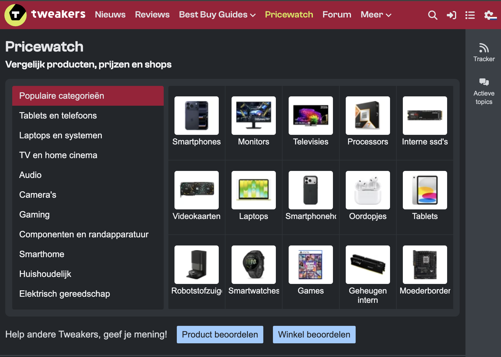
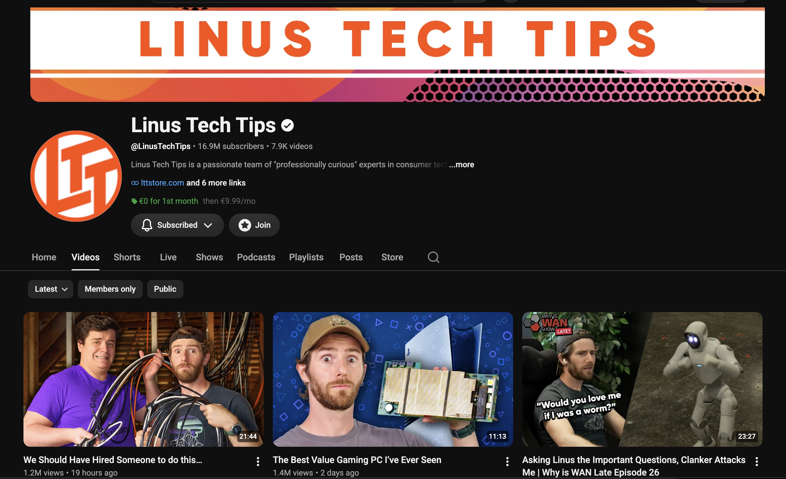

class: center, middle <!-- In deze textarea kan je in Markdown de slides aanpassen, zie https://github.com/gnab/remark/wiki voor alle mogelijkheden! --> # Inspiratie voor de digital garden van Justin Dit is een voorbeeld. Pas alles aan, zet het naar je hand, doe dingen... --- # Agenda 1. Onderwerp 2. 10 links 3. 50 afbeeldingen 4. ...(max 11 slides, 15 totaal) 5. introtekst van max. 180 tekens --- # Onderwerp Wat is jouw interesse, waarom, wat, hoe (Mijn onderwerp dat ik interessant vind is het bouwen en samenstellen van computers! Ik keek veel naar kanalen die de nieuweste tech bespraken, en vond het zelf leuk de onderdelen in Tweakers samen te stellen. Wat ik in mijn digital garden wil gaan maken is een uitleg in chronologische volgorde die verteld wat je nodig hebt voor het bouwen van een computer. Naarmate je door de componenten scrolt kan je wat lezen over het component zelf. Het wordt dus een soort Guide. <img src="./afbeeldingen/MSI-Gaming-PC_2024-09-30.png" alt="gaming pc"> <p></p> <p></p> --- # 10 links Welke 10 links heb je gelezen, geraadpleegd ter inspiratie, verdieping? Wat heb je daaruit gehaald? <a href="https://tweakers.net/"></a> --- # Zoek 50 afbeeldingen Waarom kies je specifiek voor deze verzameling? Zijn er patronen te ontdekken? Heeft alles een specifieke kleurstelling? Herken je een actie, een gevoel, een materiaal of een standpunt? Wat is kenmerkend voor deze verzameling? Welke dingen komen steeds terug? --- <!-- Slide zonder titel! --> Hieronder een voorbeeld voor het opnemen van een afbeelding. Het is iets lastiger om met Remarkjs een heleboel afbeeldingen op één slide op te nemen, je hebt daar veel custom CSS voor nodig. Een handige workaround is om in een fotobewerkingsprogramma een aantal collages van de door jou gevonden afbeeldingen te maken en die op te nemen als afbeelding op de slide...  --- background-image: url(./placeholder.svg) ... of als [background image](https://github.com/gnab/remark/wiki/Markdown#background-image) voor een slide. --- # Introtekst Wat wil je een ander vertellen over je onderwerp Hoe denk je dit te vertellen met eigen content? en met overige content zoals (links, afbeeldingen, tekst) Schrijf een eerste stukje content als basis voor je garden (maximaal 180 tekens). <!-- Laat onderstaande staan anders breekt je presentatie -->